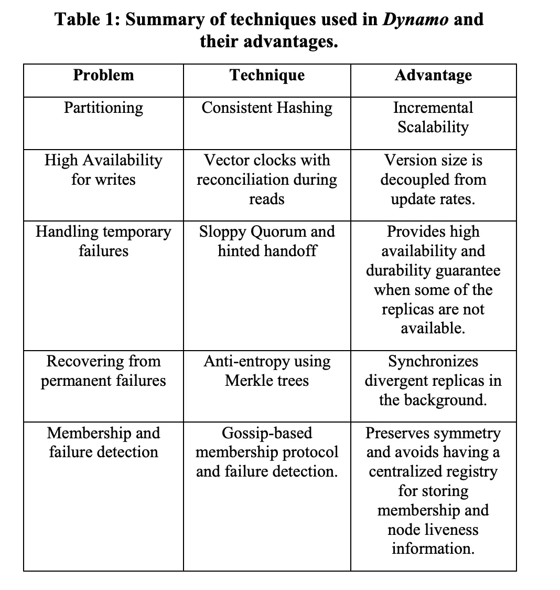
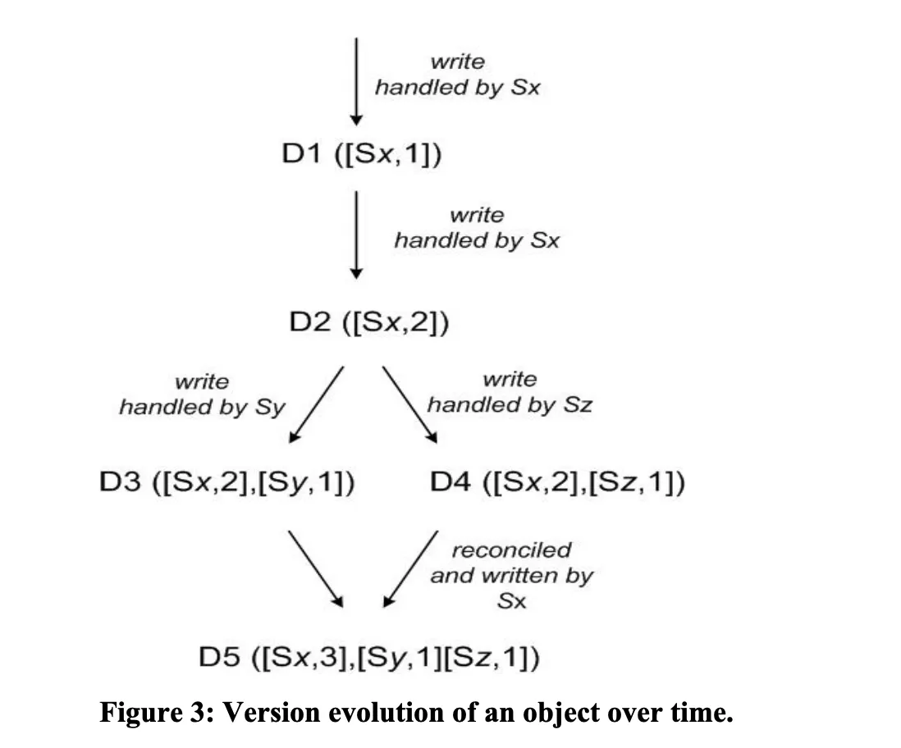

Diving into Amazon Dynamo Paper
In this blog post, we are going to look into Amazon Dynamo paper which describes a set of techniques that can be combined to form a highly-available, distributed key-value data store. This paper then became foundation for databases such as Cassandra, Riak etc.
Dynamo addresses the need for an incrementally scalable, highly-available key-value storage system. The technology is designed to give its users the ability to trade-off cost, consistency, durability and performance, while maintaining high-availability.
Requirements Link to heading
There are many applications which needs to access the data by the primary-key from the data store. Such applications needs a highly available data store which can be used to read/write data even if some of the data store nodes have problems such as disk failures, network partition etc. These application does not usually need strong consistency from data store like traditional relational databases.
What is Dynamo ? Link to heading
-
Dynamo is targeted mainly at applications that need an “always writeable” data store where no updates are rejected due to failures or concurrent writes.
-
Dynamo is built for an infrastructure within a single administrative domain where all nodes are assumed to be trusted.
-
Applications that use Dynamo do not require support for hierarchical namespaces (a norm in many file systems) or complex relational schema (supported by traditional databases).
-
Dynamo is built for latency sensitive applications that require at least 99.9% of read and write operations to be performed within a few hundred milliseconds.
Dynamo uses synthesis of well known techniques of achieve scalability and availability:
-
Data is partitioned and replicated using consistent hashing.
-
Consistency is facilitated by object versioning.
-
The consistent among replicas during updates is maintained using quorum like techniques and decentralized replica synchronization protocol.
-
Uses a gossip based distributed failure detection and membership protocol.
It completely decentralized system with minimal need for manual administration. Storage nodes can be added or removed from Dynamo without requiring any manual partitioning or redistribution.
Dynamo is targeted mainly at applications that need an “always writeable” data store where no updates are rejected due to failures or concurrent writes. Dynamo can be characterized as a zero-hop DHT, where each node maintains enough routing information locally to route a request to the appropriate node directly.
Design Considerations Link to heading
Synchronous replication algorithms used in traditional commercial systems, provides strong data consistency and tradeoff availability of the data under certain failure scenarios. Dealing with the possibility of the network failures, strong consistency and high data availability can not be achieved simultaneously.
For the systems prone to server and network failures, availability can be increased by using optimistic replication techniques, where changes are allowed to propagate to replicas in the background, and concurrent and disconnected work is tolerated.
It creates the problem of conflicting changes which must be detected and resolved. It introduces two problems.
- When to resolve them
- Who resolves them
When to resolve them: Link to heading
When to perform the process of resolving update conflicts. i.e whether conflicts should be resolved during reads or writes. When conflicts are resolved during writes, writes may be rejected if the data store cannot reach all or majority of the replicas. Dynamo is always writeable data store and pushes the complexity of resolving conflicts to the reads.
Who resolves them : Link to heading
Conflicts can be resolved by the data store or the application. When data store resolves the conflict, it’s choices are rather limited. In such cases, the data store can use simple policies such as “last write wins”.
Since application is aware of database schema, it can decide on the conflict resolution method which is best suited for it’s client experience.
Incremental scalability: Dynamo should be able to scale out one node at a time with minimal impact.
Symmetry: Every node in Dynamo should have the same set of responsibilities as its peers; there should be no distinguished node or nodes that take special roles or extra set of responsibilities. Symmetry simplifies the process of system provisioning and maintenance.
Decentralization: An extension of symmetry, the design should favor decentralized peer-to-peer techniques over centralized control. In the past, centralized control has resulted in outages and the goal is to avoid it as much as possible. This leads to a simpler, more scalable, and more available system.
Heterogeneity: The system needs to be able to exploit heterogeneity in the infrastructure it runs on. e.g. the work distribution must be proportional to the capabilities of the individual servers. This is essential in adding new nodes with higher capacity without having to upgrade all hosts at once.
Dynamo makes uses of some of the related work from
-
Peer to Peer Systems (P2P) for the problem of data storage and distribution.
-
Distributed File Systems and Databases
Architecture Link to heading
Below table describes some of the core technique used and it’s advantages

Partition Algorithm: Link to heading
One of the key design requirements for Dynamo is that it must scale incrementally. This requires a mechanism to dynamically partition the data over the set of nodes (i.e., storage hosts) in the system. Dynamo’s partitioning scheme relies on consistent hashing to distribute the load across multiple storage hosts.
I have written a detailed blog about consistent hashing. Please check it out for learning more about the consistent hashing.
Replication: Link to heading
To achieve high availability and durability, Dynamo replicates its data on multiple hosts. Each data item is replicated at N hosts. Each key k is assigned to a coordinator node. Coordinator node is in charge of the replication of the data items that falls within it’s range. In addition to locally storing each key within it’s range, the coordinator replicates these keys at the N-1 clockwise successor nodes in the ring.
The list of nodes that is responsible for storing a particular key is called the preference list. The system is designed, so that every node in the system can determine which node should be in this list for any particular key.
Data Versioning: Link to heading
Dynamo provides eventual consistency which allows for updates to be propagated to all replicas asynchronously. Dynamo treats the result of each modification as a new and immutable version of the data. It allows for multiple versions of an object to be present in the system at the same time.
-
Syntactic reconciliation: Most of the time, new versions subsume the previous version(s), and the system itself can determine the authoritative version (syntactic reconciliation).
-
Semantic reconciliation: In these cases, the system cannot reconcile the multiple versions of the same object and the client must perform the reconciliation in order to collapse multiple branches of data evolution back into one.
Dynamo uses vector clocks in order to capture causality between different versions of the same object. A vector clock is effectively a list of (node, counter) pairs. One vector clock is associated with every version of every object. One can determine whether two versions of an object are on parallel branches or have a causal ordering, by examine their vector clocks. If the counters on the first object’s clock are less-than-or-equal to all of the nodes in the second clock, then the first is an ancestor of the second and can be forgotten. Otherwise, the two changes are considered to be in conflict and require reconciliation.
In Dynamo, when a client wishes to update an object, it must specify which version it is updating. This is done by passing the context it obtained from an earlier read operation, which contains the vector clock information. Upon processing a read request, if Dynamo has access to multiple branches that cannot be syntactically reconciled, it will return all the objects at the leaves, with the corresponding version information in the context. An update using this context is considered to have reconciled the divergent versions and the branches are collapsed into a single new version.

Failure Handling Link to heading
Hinted Handoff: If Dynamo used a traditional quorum approach it would be unavailable during server failures and network partitions, and would have reduced durability even under the simplest of failure conditions. To remedy this it does not enforce strict quorum membership and instead it uses a “sloppy quorum”. All read and write operations are performed on the first N healthy nodes from the preference list, which may not always be the first N nodes encountered while walking the consistent hashing ring.
In hinted handoff if a node is temporarily down or unreachable during a write operation then a replica that would normally have lived on that node will now be sent to another node which is up and reachable. This is done to maintain the desired availability and durability guarantees. The replica sent to another node will have a hint in its metadata that suggests which node was the intended recipient of the replica. Nodes that receive hinted replicas will keep them in a separate local database that is scanned periodically. Upon detecting that original node has recovered, another will attempt to deliver the replica to the original node. Once the transfer succeeds, this node may delete the object from its local store without decreasing the total number of replicas in the system.
Using hinted handoff, Dynamo ensures that the read and write operations are not failed due to temporary node or network failures. Applications that need the highest level of availability can set W to 1, which ensures that a write is accepted as long as a single node in the system has durably written the key it to its local store.
Replica synchronization: Hinted handoff works best if the system membership churn is low and node failures are transient. There are scenarios under which hinted replicas become unavailable before they can be returned to the original replica node. To handle this and other threats to durability, Dynamo implements an anti-entropy (replica synchronization) protocol to keep the replicas synchronized.
To detect the inconsistencies between replicas faster and to minimize the amount of transferred data, Dynamo uses Merkle trees. A Merkle tree is a hash tree where leaves are hashes of the values of individual keys. Parent nodes higher in the tree are hashes of their respective children. The principal advantage of Merkle tree is that each branch of the tree can be checked independently without requiring nodes to download the entire tree or the entire data set. Moreover, Merkle trees help in reducing the amount of data that needs to be transferred while checking for inconsistencies among replicas. For instance, if the hash values of the root of two trees are equal, then the values of the leaf nodes in the tree are equal and the nodes require no synchronization. If not, it implies that the values of some replicas are different. In such cases, the nodes may exchange the hash values of children and the process continues until it reaches the leaves of the trees, at which point the hosts can identify the keys that are “out of sync”. Merkle trees minimize the amount of data that needs to be transferred for synchronization and reduce the number of disk reads performed during the anti-entropy process.
Dynamo uses Merkle trees for anti-entropy as follows: Each node maintains a separate Merkle tree for each key range (the set of keys covered by a virtual node) it hosts. This allows nodes to compare whether the keys within a key range are up-to-date. In this scheme, two nodes exchange the root of the Merkle tree corresponding to the key ranges that they host in common. Subsequently, using the tree traversal scheme described above the nodes determine if they have any differences and perform the appropriate synchronization action. The disadvantage with this scheme is that many key ranges change when a node joins or leaves the system thereby requiring the tree(s) to be recalculated. This issue is addressed, however, by the refined partitioning scheme.
Membership and Failure Detection Link to heading
An administrator uses a command line tool or a browser to connect to a Dynamo node and issue a membership change to join a node to a ring or remove a node from a ring. The node that serves the request writes the membership change and its time of issue to persistent store. The membership changes form a history because nodes can be removed and added back multiple times. A gossip-based protocol propagates membership changes and maintains an eventually consistent view of membership. Each node contacts a peer chosen at random every second and the two nodes efficiently reconcile their persisted membership change histories.
When a node starts for the first time, it chooses its set of tokens (virtual nodes in the consistent hash space) and maps nodes to their respective token sets. The mapping is persisted on disk and initially contains only the local node and token set. The mappings stored at different Dynamo nodes are reconciled during the same communication exchange that reconciles the membership change histories. Therefore, partitioning and placement information also propagates via the gossip-based protocol and each storage node is aware of the token ranges handled by its peers. This allows each node to forward a key’s read/write operations to the right set of nodes directly.
Decentralized failure detection protocols use a simple gossip-style protocol that enable each node in the system to learn about the arrival (or departure) of other node. Early designs of Dynamo used a decentralized failure detector to maintain a globally consistent view of failure state. Later it was determined that the explicit node join and leave methods obviates the need for a global view of failure state. This is because nodes are notified of permanent node additions and removals by the explicit node join and leave methods and temporary node failures are detected by the individual nodes when they fail to communicate with others (while forwarding requests).
Adding/Removing Storage Needs Link to heading
When a new node (say X) is added into the system, it gets assigned a number of tokens that are randomly scattered on the ring. For every key range that is assigned to node X, there may be a number of nodes (less than or equal to N) that are currently in charge of handling keys that fall within its token range. Due to the allocation of key ranges to X, some existing nodes no longer have to some of their keys and these nodes transfer those keys to X.
Finally, by adding a confirmation round between the source and the destination, it is made sure that the destination node does not receive any duplicate transfers for a given key range.
System Interface: Link to heading
It exposes two operations get() and put().
-
get(key) — The get(key) operations locates the object replicas associated with the key in the storage systems and returns a single object or list of objects with conflicting versions along with context.
-
put(key, context, object) — The put operation determines where the replicas of the object should be placed based on the associated key, and writes the replicas to disk.
Dynamo treats both the key and the object supplied by the caller as an opaque array of bytes. It applies a MD5 hash on the key to generate a 128-bit identifier, which is used to determine the storage nodes that are responsible for serving the key.
Execution of get() and put() operations: There are two strategies that a client can use to select a node: (1) route its request through a generic load balancer that will select a node based on load information, or (2) use a partition-aware client library that routes requests directly to the appropriate coordinator nodes.
A node handling a read or write operation is known as the coordinator. Typically, this is the first among the top N nodes in the preference list. If the requests are received through a load balancer, requests to access a key may be routed to any random node in the ring. In this scenario, the node that receives the request will not coordinate it if the node is not in the top N of the requested key’s preference list. Instead, that node will forward the request to the first among the top N nodes in the preference list.
To maintain consistency among its replicas, Dynamo uses a consistency protocol similar to those used in quorum systems. This protocol has two key configurable values: R and W. R is the minimum number of nodes that must participate in a successful read operation. W is the minimum number of nodes that must participate in a successful write operation.
Upon receiving a put() request for a key, the coordinator generates the vector clock for the new version and writes the new version locally. The coordinator then sends the new version (along with the new vector clock) to the N highest-ranked reachable nodes. If at least W-1 nodes respond then the write is considered successful.
For a get() request, the coordinator requests all existing versions of data for that key from the N highest-ranked reachable nodes in the preference list for that key, and then waits for R responses before returning the result to the client. If the coordinator ends up gathering multiple versions of the data, it returns all the versions it deems to be causally unrelated. The divergent versions are then reconciled and the reconciled version superseding the current versions is written back.
Dynamo has provided the desired levels of availability and performance and has been successful in handling server failures, data center failures and network partitions. Dynamo is incrementally scalable and allows service owners to scale up and down based on their current request load. Dynamo allows service owners to customize their storage system to meet their desired performance, durability and consistency SLAs by allowing them to tune the parameters N, R, and W.
For more details, I would highly recommend reading through this amazing paper https://www.allthingsdistributed.com/2007/10/amazons_dynamo.html.